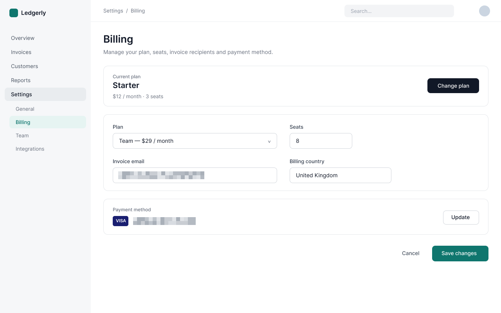

Human view
3
Click "Change plan"
Opens the plan picker. Only workspace owners see this button.

Open source · Self-hosted · Agent-readableOpen source · Self-hosted
StepDoc turns a browser workflow into a step-by-step guide your team edits and publishes — plus a replay file any browser agent can follow. Run it in your browser, on shared hosting, on Cloudflare, or publish to GitHub Pages.A step-by-step guide for your team and a replay file for any browser agent — from one capture.
No account needed in local mode · Chrome, Edge and Firefox
Opens the plan picker. Only workspace owners see this button.

{
"index": 3,
"action": "click",
"title": "Click \"Change plan\"",
"url": "https://app.ledgerly.io/settings/billing",
"target": {
"role": "button",
"name": "Change plan",
"locators": [{ "strategy": "testId",
"value": "billing-change-plan" }]
},
"expect": {
"visible": { "role": "dialog", "name": "Choose a plan" }
}
}
// replay.spec.ts
await page.getByRole('button', { name: 'Change plan' }).click();"action": "click",
"target": { "role": "button",
"name": "Change plan" },
"expect": { "visible":
{ "role": "dialog" } }Self-host
Extension only. Guides live in IndexedDB; export when you need to share.
Load the extensionPHP 8.1 + SQLite. No daemons, no cron, no Node.
upload /stepdoc → public_htmlWorkers + D1 + R2 on the free tier.
npx wrangler deployDocker image or the Supabase stack.
docker compose upRead-only guide sites with llms.txt and JSON.
Publish → repoWorkflow
Everything Scribe users expect, with the parts that usually cost extra built in.
01
Clicks, selects and navigation become steps with screenshots. Typed values never do.
Go to app.ledgerly.io/settings
navigateClick "Billing" in the sidebar
click · linkClick "Change plan"
click · button02
Rewrite, reorder, merge. Each step keeps role, name and selectors for replay.
rolebutton "Change plan"UniquetestIdbilling-change-planUniquecsssection.plan > buttonFragile03
Emails, cards and tokens are pixelated before the screenshot leaves your tab.
04
PDF, HTML, Markdown, DOCX, public links, embeds and static sites.
Built for agents
Agents read the accessibility tree, not pixels. Every StepDoc guide and every app screen is built around that.
// Integration preview; same tools as the planned MCP server
const mc = document.modelContext ?? navigator.modelContext;
mc?.registerTool({
name: 'export_guide',
description: 'Export a guide as pdf, html, md, json or playwright',
inputSchema: guideExportSchema, // from @stepdoc/schema
execute: ({ id, format }) => stepdoc.export(id, format),
});
// Also registered: list_guides · get_guide · create_guide
// add_step · update_step · publish_guidePrivacy
Inputs are stored as actions: “Fill in the Invoice email field”. Passwords and secrets never touch disk.
value: { kind: "secret" }Pattern detectors run in the extension. The server only ever receives already-redacted pixels.
redactions[] kept as layersSQLite on your host, D1 + R2 on your account, or your browser. AI is optional and bring-your-own-key.
no StepDoc cloud in the loopCompare
| Feature | stepdoc | Scribe | Tango |
|---|---|---|---|
| Runs on your own storage | — | — | |
| Works with no server at all | — | — | |
| Publish to GitHub Pages | — | — | |
| Agent replay file (guide.json + Playwright) | — | Enterprise (Agents) | |
| MCP server | Planned | Enterprise | Enterprise |
| Enforced redaction before upload | Enterprise | Enterprise | |
| Version history | Unlimited | 1 week on Pro | 14 days on Pro |
| Roles + strong sign-in without Enterprise | Passkeys (planned) | — | — |
| Price for 20 creators, per year | $0 licence | $3,120 (Pro Team) | $3,600 (Pro) |
| Feature | StepDoc | Scribe |
|---|---|---|
| Your own storage | — | |
| No-server mode | — | |
| GitHub Pages | — | |
| MCP server | Planned | Enterprise |
| Enforced redaction | Enterprise | |
| 20 creators / yr | $0 | $3,120 |
From public pricing and plan pages, checked 25 Nov 2026. Prices change; re-check before quoting.Public pricing, checked 25 Nov 2026.
FAQ
Yes. Install the extension and choose “This browser”. Guides, screenshots and versions stay in IndexedDB; export a .stepdoc bundle or pair a server later.
A static app plus one PHP front controller and a SQLite file outside public_html. Image work happens in the browser, so no Imagick or headless Chrome is needed.
Point it at the guide URL or llms.txt. It gets role + name targets and expected results per step, or run the generated Playwright spec in CI.
Only if you add your own key, and only DOM context (no screenshots). Rules-based step text works with AI switched off.